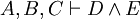
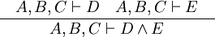
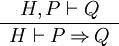

Sequent Prover Developer Guide
From Event-B
|
Welcome to Event-B Sequent Prover
The Event-B sequent prover is a plug-in for the Eclipse platform which provides different proof rules to be used within the Rodin Tool. The following sections discuss the issues when extending the Event-B sequent prover.
Sequent Prover Core
Sequents
TODO
Proof Rules
TODO
Proof Trees
TODO
Reasoners
Concepts
Reasoners are used in the Event-B sequent prover to generate proof rules. A reasoner is provided with the sequent to prove as well as some extra optional input. The reasoner is implemented by a computer program and it is the job of the developers to ensure that the reasoners either fail or generate logically valid proof rules.
An example of a reasoner is the "conjI" reasoner that generates the conjI proof rules, which splits a conjunctive goal into two sub-goals. Here, assuming that the input sequent is , the conjI reasoner produces the following proof rules.
|  |
Adding a reasoner
A reasoner is added into the Event-B sequent prover using the extension point org.eventb.core.seqprover.reasoners. Below is an example of how to contribute to the extension point.
<extension point="org.eventb.core.seqprover.reasoners">
<reasoner
class="org.eventb.contributors.seqprover.reasoners.Hyp"
id="hyp"
name="%hypName"/>
</extension>
The above declaration defines a reasoner with a specific id (which will be automatically prefixed by the project name, e.g. org.eventb.contributors.seqprover). The name is an externalised string which is used for display purpose.
The class attribute must be a valid Java class name which will be used to create an instance of the reasoner. This class must implement the org.eventb.core.seqprover.IReasoner interface.
However, most of the time, developers only need to extend one of the abstract implementations (depending on the type of the reasoner). For this implementation purpose, the type of the reasoners are specified below:
- Automatic rewriting reasoners: Reasoners which apply some rewriting rules automatically to simplify the sequent.
- Automatic inference reasoners: Reasoners which apply an inference rule automatically.
- Manual rewriters: Reasoners which apply a rewriting rule at a given position.
- Manual inference: Reasoner which apply an inference rule manually.
- General reasoners: If the reasoner does not fall into the above categories, clients need to implement the interface IReasoner directly.
Implementing a reasoner is only a first step of contributing to the sequent prover. In order to use a reasoner, the reasoner needs to be wrapped around by a tactic.
See also Versioned Reasoners.
Automatic Rewriting Reasoners
Concepts
The reasoners of this type do not have any extra input (except the sequent) and automatically rewrite all occurrences of certain formulas into other ones. An example of this is the rewriter which rewrites according to the following rules:
Implementation
Step by step:
- Create a new plug-in project, e.g. org.eventb.contributor.seqprover.arith
- Added dependency: org.eventb.core.seqprover.
- Add an extension to the point org.eventb.core.seqprover.reasoners, e.g.,
class="org.eventb.core.seqprover.arith.ArithRewrites" id="org.eventb.core.seqprover.arithmetic" name="%arithRewritesName"
- Implement the class: Click on the class attribute of the extension, a dialog will appear for new class wizard.
- This class should extend the import org.eventb.internal.core.seqprover.eventbExtensions.rewriters.AbstractAutoRewrites. For the moment, the class is internal within the plug-in and subject to change. Clients can make a copy of this class to develop their own implementation.
- An example is as follows:
import org.eventb.core.ast.IFormulaRewriter;
import org.eventb.core.seqprover.SequentProver;
public class ArithRewrites extends AbstractAutoRewrites {
private static final IFormulaRewriter rewriter = new ArithRewriterImpl();
public AutoRewrites() {
super(rewriter, true);
}
public static String REASONER_ID = SequentProver.PLUGIN_ID + ".autoRewrites";
public String getReasonerID() {
return REASONER_ID;
}
@Override
protected String getDisplayName() {
return "simplification rewrites";
}
}
- The constructor shall call the super constructor super(IFormulaRewriter, boolean) to specify the formula rewriter to be used, and the reasoner may hide the source of the rewritten hypothesis or not. Clients need to implement two methods:
- The first one, namely getReasonerID(), returns the string ID of this reasoner. It must be the same ID as the one declared in the XML file (do not forget the project name prefix).
- The second method is getDisplayName(). It returns the display name of the reasoner, which will be used for display purpose in the UI.
- In order to implement the formula rewriter, clients are suggested to use Tom. The instructions are as follows:
- Create a file named build-tom.xml within your project. The best way to do this is to copy from org.eventb.core.seqprover, and modify this accordingly.
- Right click on the name of your project and choose "Properties".
- Choose "Builders", then click on "New" and choose "Ant Build" and click "OK". A dialog will open for the new builder wizard.
- At the "Main" tab:
- Enter the name of the builder (e.g., Tom).
- Buildfile: "Browse Workspace" to your build-tom.xml.
- Base Directory: "Variables" and choose "build_project".
- At the "Targets" tab:
- Auto Build: Click "Set Targets" and choose "tom" from the list.
- During a "clean": Click "Set Targets" and choose "clean" (unchecked "tom").
- You will come back to this builder later on.
- Implementing the rules:
- Create a file called ArithRewriterImpl.t (the name should be consistent with the step above).
- The content of the file should look like this:
package org.eventb.core.seqprover.arith;
import java.util.ArrayList;
import java.util.Collection;
import java.math.BigInteger;
import org.eventb.core.ast.AssociativeExpression;
import org.eventb.core.ast.AssociativePredicate;
import org.eventb.core.ast.AtomicExpression;
import org.eventb.core.ast.BinaryExpression;
import org.eventb.core.ast.BinaryPredicate;
import org.eventb.core.ast.BoolExpression;
import org.eventb.core.ast.BoundIdentDecl;
import org.eventb.core.ast.BoundIdentifier;
import org.eventb.core.ast.DefaultRewriter;
import org.eventb.core.ast.Expression;
import org.eventb.core.ast.Formula;
import org.eventb.core.ast.FormulaFactory;
import org.eventb.core.ast.FreeIdentifier;
import org.eventb.core.ast.Identifier;
import org.eventb.core.ast.IntegerLiteral;
import org.eventb.core.ast.LiteralPredicate;
import org.eventb.core.ast.Predicate;
import org.eventb.core.ast.QuantifiedExpression;
import org.eventb.core.ast.QuantifiedPredicate;
import org.eventb.core.ast.RelationalPredicate;
import org.eventb.core.ast.SetExtension;
import org.eventb.core.ast.SimplePredicate;
import org.eventb.core.ast.UnaryExpression;
import org.eventb.core.ast.UnaryPredicate;
import org.eventb.core.seqprover.eventbExtensions.Lib;
@SuppressWarnings("unused")
public class ArithRewriterImpl extends DefaultRewriter {
public ArithRewriterImpl() {
super(true, FormulaFactory.getDefault());
}
...
}
- See for example org.eventb.internal.core.seqprover.eventbExtensions.rewriters.AutoRewriterImpl.t, which implements most of the automatic rewriting rules supplied by the Rodin platform.
Testing
The abstract automatic rewriting reasoners have been tested, so clients only need to test if the reasoner has been declared correctly (testing the reasoner ID), and if the formula rewriter used for this reasoner has been implemented correctly.
Testing the reasoner ID
This test is based on the abstract class org.eventb.core.seqprover.rewriterTests.AbstractAutomaticReasonerTests. An example is as follows.
import org.eventb.core.seqprover.SequentProver;
public class ArithRewriterReasonerTests extends AbstractAutomaticReasonerTests {
@Override
protected SuccessfulTest[] getSuccessfulTests() {
// No need to test this. This should be guaranteed by testing the
// abstract automatic rewrite reasoner and the formula rewriter itself.
return new SuccessfulTest [] {
};
}
@Override
protected String[] getUnsuccessfulTests() {
// No need to test this. This should be guaranteed by testing the
// abstract automatic rewrite reasoner and the formula rewriter itself.
return new String [] {
};
}
@Override
public String getReasonerID() {
return "org.eventb.core.seqprover.arithmetic";
}
}
In this test, clients only need to provide the reasoner ID under test.
Testing the formula rewriter
This test is based on the abstract class org.eventb.core.seqprover.rewriterTests.AbstractFormulaRewriterTests. An example is as follows.
import org.eventb.internal.core.seqprover.eventbExtensions.rewriters.AutoRewriterImpl;
import org.junit.Test;
public class ArithFormulaRewriterTests extends AbstractFormulaRewriterTests {
// The automatic rewriter for testing.
private static final IFormulaRewriter rewriter = new ArithRewriterImpl();
/**
* Constructor.
*
* Create an abstract formula rewriter test with the input is the automatic
* rewriter.
*/
public ArithFormulaRewriterTests() {
super(rewriter);
}
/**
* Tests for rewriting conjunctions.
*/
@Test
public void testRewrite() {
// Test rewriting predicate
predicateTest("⊥", "x = 1 ∧ ⊥");
// Test rewriting expression
expressionTest("1", "card({x + 1})");
}
}
More instructions about how to use the method predicateTest and expressionTest (along with some other utility methods) can be found in the org.eventb.core.seqprover.rewriterTests.AbstractFormulaRewriterTests class.
Automatic Inference Reasoners
Concepts
The reasoners of this type do not have any extra input (except the sequent) and implements an inference rule or a collection of inference rules. For example, a reasoner can implement the following inference rules which deal with conjunction in the hypothesis and in goal.
|  |
Implementation
In order to implement a reasoner of this type, clients extend the abstract class org.eventb.core.seqprover.reasonerInputs.EmptyInputReasoner. Examples include org.eventb.internal.core.seqprover.eventbExtensions.ImpI which implements the above proof rule.
Testing
TODO
Manual Rewriting Reasoners
Concepts
The reasoners of this type have an input that refers to a predicate of the sequent (either a hypothesis or null if the goal is rewritten) and the position in that predicate where the rewriting occurs. An example of this is the rewriter which rewrites according to the following rules:
TODO
Implementation
TODO
Testing
TODO
Manual Inference Reasoners
Concepts
The reasoners of this type have an input that refers to a predicate of the sequent (either a hypothesis or null if the goal is rewritten) and the position in that predicate where the rule is applied. For example, a reasoner can implement the following inference rules which deal with conjunction in the hypothesis and in goal.
Implementation
TODO
Testing
TODO
General Reasoners
Concepts
If the reasoner does not fall into the above categories, clients need to implement the interface IReasoner directly. It includes how to serialize/deserialize the reasoner input. More information to follow ...
TODO
Implementation
TODO
Testing
TODO
Tactics
Concepts
Tactics provide a way to structure strategic or heuristic knowledge about proof search. They provide control structures to call reasoners or other tactics to make modifications to the proof trees. In the Rodin platform, the users are dealing with tactics, not reasoners.
A tactic can just be the wrapper around a reasoner, but it can be more complicated by combining different tactics.
Adding a tactic
Tactics are divided into two classes: automatic and manual tactics.
Automatic Tactics
A tactic is added into the Event-B sequent prover using the extension point org.eventb.core.seqprover.autoTactics.
<extension point="org.eventb.core.seqprover.autoTactics">
<autoTactic
class="org.eventb.contributors.seqprover.TrueGoalTac"
description="%trueGoalTacDesc"
id="trueGoalTac"
name="%trueGoalTacName">
</autoTactic>
</extension>
The above declaration defines an automatic tactic with a specific id (which will automatically be prefixed by the project name, e.g. org.eventb.contributors.seqprover). The name attribute is an externalised string used for display purposes. The description attribute is an externalised string that gives the detailed description of the tactic (what it does).
The class attribute must be a valid Java class name which will be used to create an instance of the tactic. This class must implement the org.eventb.core.seqprover.ITactic interface.
For automatic tactics, they must have no input, and most of the time they are just a wrapper around an automatic reasoner. Below is an example of such a tactic.
public static class AutoTac extends AbsractLazilyConstrTactic {
@Override
protected ITactic getSingInstance() {
return BasicTactics.reasonerTac(new AutoReasoner(), EMPTY_INPUT);
}
}
Here, the implementation extends the abstract class org.eventb.core.seqprover.eventbExtensions.AutoTactics#AbstractLazilyConstrTactic. AutoReasoner is the name of the class which implements an automatic reasoner expecting an empty input (See reasoners).
Manual Tactics
TODO
Event-B Tactics
Adding a POM Tactic
POM tactics are tactics that are run by the auto POM. Only automatic tactics (See tactics) can be declared as POM tactics.
POM tactics are added using the extension point org.eventb.core.pomTactic. An example is given below:
<extension point="org.eventb.core.pomTactics"> <tactic id="org.eventb.core.seqprover.trueGoalTac"/> </extension>
Each tactic element only contains an attribute id, which must be a valid tactic ID (including the project prefix) as declared using the org.eventb.core.seqprover.autoTactics extension point.
Once declared as a POM tactic, the information about the tactic will appear in the preferences for the POM tactic and the users of the platform. However, this tactic will not be a default POM tactic and the users must change the preferences to enable this tactic.
Adding a Post Tactic
Post tactics are tactics that are run after every manual proof steps in interactive mode. Only automatic tactics (See tactics) can be declared as post tactics.
Post tactics are added using the extension point org.eventb.core.postTactic. An example is as follows:
<extension point="org.eventb.core.postTactics"> <tactic id="org.eventb.core.seqprover.trueGoalTac"/> </extension>
Each tactic element only contains an attribute id which must be a valid tactic ID (including the project prefix) as declared using the org.eventb.core.seqprover.autoTactics extension point.
Once declared as a post tactic, the information about the tactic will appear in the preferences for the post tactic and the users of the platform. However, this tactic will not be a default post tactic and the users must change the preferences to enable this tactic.
UI Tactic Providers
Tactic providers allow to define how manual tactics contribute to the User Interface.
TODO
See also New Tactic Providers.